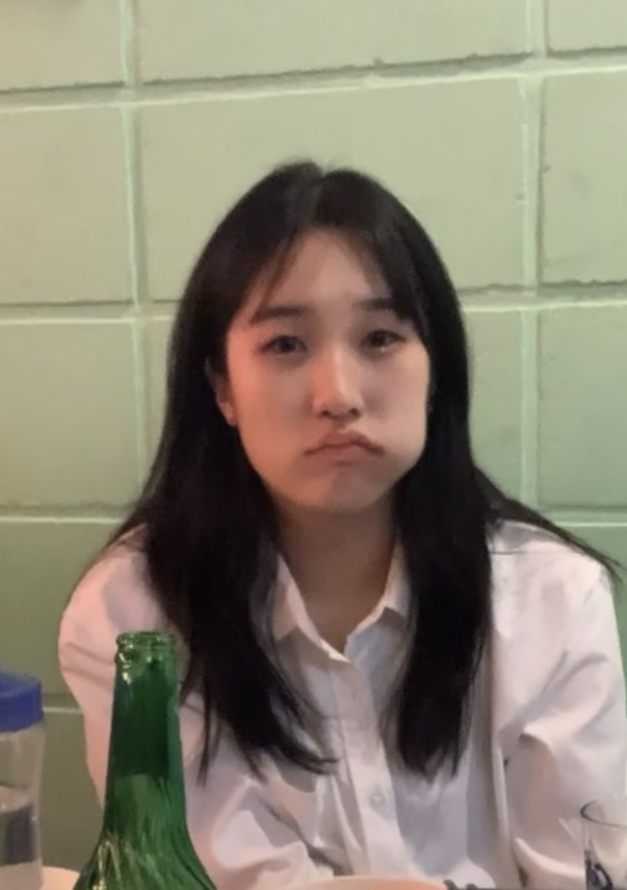

안녕하세요 유광복 교수님. 저는 숭실대학교 전자정보공학부 IT융합에 재학 중인
22학번(20221608) 이세미입니다.
자기소개 ppt 과제를 하던 중 가볍게 만들어보았습니다.
귀엽게 봐주세요 ..ㅎ

하지만 저는 이런 제 성격을 좋아합니다. 어떤 문제가 생겼을 때 그 문제를 과대해석하고 깊숙하게 고민하고 생각하는 건
시간 낭비라고 생각하는 쪽입니다. 제가 제일 좋아하는 말이 '어떻게든 되겠지'라는 걸 보면 성격이 얼마나 급하고 단순한지 나타나는 것 같습니다.
이런 성격이 어떤 면에서는 진중하지 않게 보일 수 있지만 '문제는 고민할 시간에 해결해버리자'라는 주의라서 문제 해결을 미루거나 또 대충하지는 않습니다.
자존심이 세기 때문에 남들보다 뒤처지거나 부족해보이는 모습은 보이지 않을려고 혼자 이것저것 해보려 항상 노력합니다.
그래서 늘 누구에게 쫓기듯 무언가를 하는 편인데 그게 또 제게 좋은 양분이 될거라 늘 생각합니다. 근거 없는 자신감을 만들지 않으려 노력합니다.
이런 점이 모순적이게도 자존감이 높은 편인 것 같습니다.